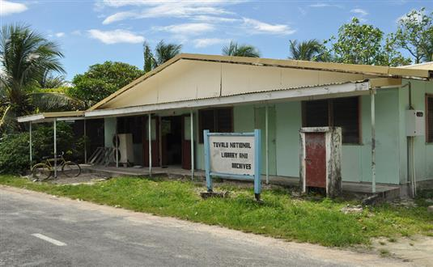
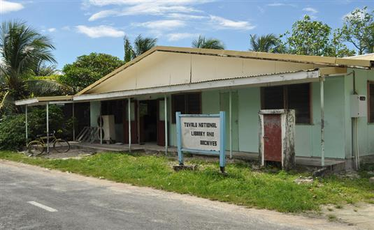

USA Travel Guide

Tuvalu
Language: Tuvaluan, English
Currency: Australian Dollar
Attractions: Funafuti Marine Conservation Area, Tuvalu Philatelic Bureau, and Tuvalu National Library
Visa Required: Visa on arrival. Apply online on https://cibtvisas.com/destination/tuv/tuvalu-visa
Getting There:
Overview: Tuvalu is a small island nation located in the Pacific Ocean, consisting of nine coral atolls and is home to friendly Polynesian people. While the country's size may be small, its beauty and culture are immense, with its crystal-clear waters and stunning coral reefs offering unparalleled opportunities for snorkeling and diving. Visitors can also explore the country's rich history and culture by visiting traditional villages, attending cultural events, and trying local cuisine. The capital, Funafuti, offers a glimpse into Tuvalu's daily life, with its bustling markets and lively atmosphere. Whether you're looking for adventure or relaxation, Tuvalu is a hidden gem waiting to be discovered.
 
